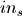
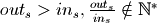
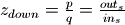
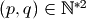
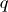

2.2.2. Non integer downsampling factor¶
Sirius way to handle non integer downsampling factor consists in two step :
- Upsampling to a common sampling grid (between input and output sampling grids)
- Decimating to the output sampling grid
To illustrate this, say the input spacing is  and output one is with
, then the downsampling factor deduced by
Sirius is  with . The first
step is then to upsample the input signal by a factor . Then, the output is decimated so that only  pixel out of is kept.
pixel out of is kept.